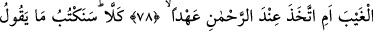
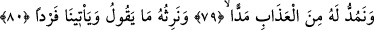
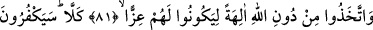
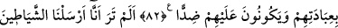
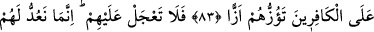
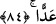

HER NEFESİN KIYMETİ
77. Âyetlerimizi inkâr edip “Bana elbette mal ve evlâd verilecek” diyen adamı
gördün mü?
78. O gaybı mı biliyor, yoksa Rahman’ın katından bir söz mü aldı?
79. Hayır, biz onun dediğini yazacağız ve onun için azabı uzattıkça uzatacağız.
80. Onun dediğine biz vâris olacağız kendisi, bize tek başına gelecek.
81. Kendilerine destek olsunlar diye Allah’tan başka tanrılar edindiler.
82. Hayır, onlara tapmalarını inkâr edecekler ve onlara düşman olacaklardır.
83. Biliyor musun? Biz kâfirlere şeytanları gönderdik, onları kışkırtıyorlar.
84. Onlar hakkında acele etme. Biz onların sürelerini doldurmalarını sayıyoruz.
“Âyetlerimizle inkâr edip” onlarla alay edip sahte bir yeminle sözüne başlayarak:
“Eğer âhirette yeniden dirilirsem “bana elbette mal ve evlâd verilecek.” diyen adamı
gördün mü?” yani, öldükten sonra dirilmeye dâir âyetlerin de içerisinde olduğu
âyetlerimizi inkar eden kimseye bakıp gördün mü? Ey Muhammed, ona bak da onun eşi
benzeri olmayan bu durumuna ve iğrenç cür’etine şaş.
Bu âyet, yeniden dirilmeyle alay eden Âs b. Vâil hakkında inmiştir. Habbâb b. Eret’in
onda malı vardı. Habbâb ondan malını istedi. Âs b. Vâil, “Hayır, sen Muhammed’i
inkâr edene kadar malını vermem.” dedi. Habbâb ise: “Allâh’a yemin olsun ki,
Muhammed’i sağken ne öldükten sonra, ne de yeniden dirildikten sonra inkâr etmem”
dedi. Bunun üzerine Âs b. Vâil, “Yeniden dirildiğin zaman bana gelirsin; o zaman benim
malım ve evlâdım olacak. Sana o zaman veririm” dedi.
Âyetteki soru, Âs b. Vâil’in durumuna şaşma ifade etmek ve onun âyetleri inkârının ne
kadar garip ve fecî bir şey olduğunu bildirmek içindir.